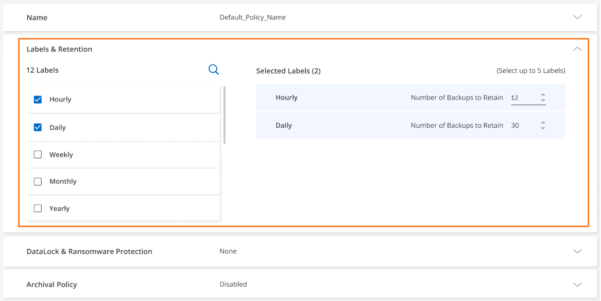
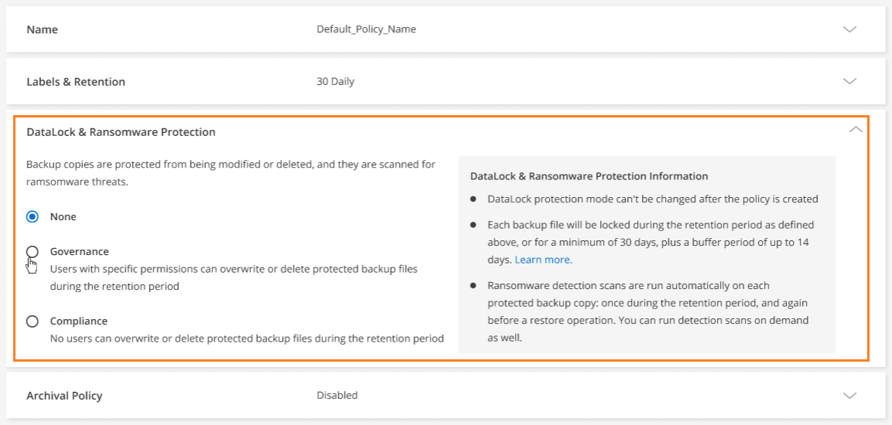
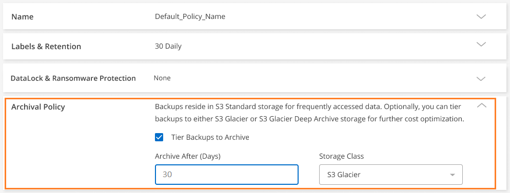

Amazon Web Services
Amazon Web Services
 Google Cloud
Google Cloud
 Microsoft Azure
Microsoft Azure
 Dokumentationsänderungen beantragen
Dokumentationsänderungen beantragen In GitHub bearbeiten
In GitHub bearbeiten Leitfaden für Beitragende
Leitfaden für BeitragendeKonfigurationseinstellungen für Cloud-Backup-Richtlinien
Beitragende
Dieses Dokument beschreibt die Konfigurationseinstellungen für die Backup-Richtlinie für On-Premises-ONTAP-Systeme und Cloud Volumes ONTAP-Systeme bei Verwendung des Cloud Backup Service.
Backup-Pläne
Mit Cloud Backup können Sie mehrere Backup-Richtlinien mit individuellen Zeitplänen für jede Arbeitsumgebung (Cluster) erstellen. Sie können Volumes mit unterschiedlichen Recovery-Punkten (RPO) unterschiedliche Backup-Richtlinien zuweisen.
Jede Sicherungsrichtlinie enthält einen Abschnitt für Labels & Retention, den Sie auf Ihre Sicherungsdateien anwenden können.

Es gibt zwei Teile des Zeitplans: Das Etikett und der Aufbewahrungswert:
-
Die Bezeichnung definiert, wie oft eine Sicherungsdatei aus dem Volume erstellt (oder aktualisiert) wird. Sie können eine der folgenden Beschriftungstypen auswählen:
-
Sie können eine oder eine Kombination aus, stündlich, täglich, wöchentlich, monatlich, Und jährliche Zeitrahmen.
-
Sie können eine der vom System definierten Richtlinien auswählen, die Backup und Aufbewahrung für 3 Monate, 1 Jahr oder 7 Jahre bieten.
-
Wenn Sie im Cluster benutzerdefinierte Backup-Sicherungsrichtlinien mit ONTAP System Manager oder der ONTAP CLI erstellt haben, können Sie eine dieser Richtlinien auswählen.
-
-
Der Wert Retention definiert, wie viele Sicherungsdateien für jedes Etikett (Zeitrahmen) aufbewahrt werden. Sobald die maximale Anzahl von Backups in einer Kategorie oder Intervall erreicht wurde, werden ältere Backups entfernt, sodass Sie immer über die aktuellsten Backups verfügen. Dies spart auch Storage-Kosten, da veraltete Backups nicht mehr Speicherplatz in der Cloud belegen.
Beispiel: Erstellen Sie eine Backup Policy, die 7 wöchentlich und 12 monatlich Backups erstellt:
-
Jede Woche und jeden Monat wird eine Sicherungsdatei für das Volume erstellt
-
In der 8. Woche wird das erste wöchentliche Backup entfernt, und das neue wöchentliche Backup für die 8. Woche wird hinzugefügt (maximal 7 wöchentliche Backups bleiben erhalten)
-
Am 13. Monat wird das erste monatliche Backup entfernt, und das neue monatliche Backup für den 13. Monat wird hinzugefügt (maximal 12 monatliche Backups)
Beachten Sie, dass die jährlichen Backups nach der Übertragung in den Objektspeicher automatisch aus dem Quellsystem gelöscht werden. Dieses Standardverhalten kann geändert werden "Klicken Sie auf der Seite Erweiterte Einstellungen auf" Für die Arbeitsumgebung.
DataLock- und Ransomware-Schutz
Cloud Backup unterstützt DataLock und Ransomware-Schutz für Ihre Volume-Backups. Dank dieser Funktionen können Sie Ihre Backup-Dateien sperren und scannen, um mögliche Ransomware auf Backup-Dateien zu erkennen. Dies ist eine optionale Einstellung, die Sie in Ihren Backup-Richtlinien definieren können, wenn Sie zusätzliche Sicherheit für Ihre Volume-Backups für ein Cluster wünschen.
Beide dieser Funktionen schützen Ihre Backup-Dateien, damit stets eine gültige Backup-Datei zur Wiederherstellung von Daten im Falle eines Ransomware-Angriffs auf Ihre Quelldaten zur Verfügung steht. Darüber hinaus hilft es bei der Einhaltung bestimmter gesetzlicher Vorgaben, bei denen Backups für einen bestimmten Zeitraum gesperrt und aufbewahrt werden müssen. Bei aktiviertem DataLock und Ransomware-Schutz sind in dem Cloud-Bucket, der im Rahmen der Cloud Backup-Aktivierung bereitgestellt wird, Objektsperren und Objektversionierung aktiviert.
Diese Funktion bietet keinen Schutz für Ihre Quell-Volumes, sondern nur für die Backups dieser Quell-Volumes. Mit NetApp "Cloud Insights und Cloud Secure", Oder einige der "Ransomware-Schutz durch ONTAP" Um Ihre Quell-Volumes zu schützen.

|
|
Was ist DataLock
DataLock schützt Ihre Backup-Dateien vor einer bestimmten Zeit zu ändern oder zu löschen. Bei dieser Funktionalität kommt Technologie des Objekt-Storage-Anbieters zum Einsatz, um Objekte zu sperren. Der Zeitraum, in dem die Sicherungsdatei gesperrt (und aufbewahrt) ist, wird als Aufbewahrungszeitraum für DataLock bezeichnet. Er basiert auf dem von Ihnen definierten Backup-Richtlinienplan und der Aufbewahrungseinstellung sowie einem Puffer von 14 Tagen. Jede DataLock-Aufbewahrungsrichtlinie, die weniger als 30 Tage beträgt, wird auf mindestens 30 Tage aufgerundet.
Beachten Sie, dass alte Backups nach Ablauf des Aufbewahrungszeitraums von DataLock gelöscht werden, nicht nach Ablauf der Aufbewahrungsfrist für Backups.
Sehen wir uns einige Beispiele an, wie das funktioniert:
-
Wenn Sie einen monatlichen Backup-Zeitplan mit 12 Aufbewahrung erstellen, ist jedes Backup für 12 Monate (plus 14 Tage) gesperrt, bevor es gelöscht wird.
-
Wenn Sie eine Sicherungsrichtlinie erstellen, die 30 tägliche, 7 wöchentliche, 12 monatliche Backups erstellt, gibt es drei Aufbewahrungsfristen. Die „30 täglichen“ Backups würden 44 Tage (30 Tage plus 14 Tage Puffer), die „7 wöchentlichen“ Backups würden 9 Wochen (7 Wochen plus 14 Tage) aufbewahrt und die „12 monatlichen“ Backups würden 12 Monate (plus 14 Tage) aufbewahrt.
-
Wenn Sie einen stündlichen Backup-Zeitplan mit 24 Aufbewahrung erstellen, könnten Sie denken, dass Backups für 24 Stunden gesperrt sind. Da dies jedoch weniger als 30 Tage beträgt, wird jedes Backup für 44 Tage gesperrt und aufbewahrt (30 Tage plus 14 Tage Puffer).
Sie können in diesem letzten Fall sehen, dass, wenn jede Backup-Datei für 44 Tage gesperrt ist, Sie am Ende mit vielen mehr Backup-Dateien stehen, als normalerweise mit einer stündlichen/24-Aufbewahrungs-Richtlinie aufbewahrt werden würde. In der Regel, wenn Cloud Backup die 25. Backup-Datei erstellt, würde es das älteste Backup löschen, um die maximalen Aufbewahrung bei 24 zu behalten (basierend auf der Richtlinie). Die DataLock-Aufbewahrungseinstellung überschreibt in diesem Fall die Richtlinienaufbewahrung von Ihrer Backup-Richtlinie. Dies könnte sich auf Ihre Storage-Kosten auswirken, da Backup-Dateien über einen längeren Zeitraum im Objektspeicher gespeichert werden.
Was ist Ransomware-Schutz
Ransomware-Schutz scannt Ihre Backup-Dateien, um einen Ransomware-Angriff auf einen Nachweis zu untersuchen. Die Erkennung von Ransomware-Angriffen erfolgt über einen Prüfsummenvergleich. Falls in einer Backup-Datei potenzielle Ransomware im Vergleich zur vorherigen Backup-Datei identifiziert wird, wird diese neuere Backup-Datei durch die neueste Backup-Datei ersetzt, die keine Anzeichen eines Ransomware-Angriffs zeigt. (Die Datei, die als Ransomware-Angriff gekennzeichnet ist, wird 1 Tag nach ihrer Ersetzung gelöscht.)
Ransomware-Scans erfolgen an 3 Punkten im Backup- und Restore-Prozess:
-
Beim Erstellen einer Sicherungsdatei
Der Scan wird nicht auf der Sicherungsdatei durchgeführt, wenn er zum ersten Mal in den Cloud-Speicher geschrieben wird, sondern wenn die nächste Sicherungsdatei geschrieben wird. Wenn Sie beispielsweise einen wöchentlichen Backup-Zeitplan für Dienstag eingestellt haben, wird am Dienstag den 14. Ein Backup erstellt. Dann am Dienstag der 21. Eine weitere Sicherung erstellt wird. Der Ransomware-Scan wird derzeit auf der Backup-Datei vom 14. Juni durchgeführt.
-
Wenn Sie versuchen, Daten aus einer Sicherungsdatei wiederherzustellen
Sie können einen Scan ausführen, bevor Sie Daten aus einer Sicherungsdatei wiederherstellen, oder diesen Scan überspringen.
-
Manuell
Sie können jederzeit einen Ransomware-Sicherheitsscan bei Bedarf ausführen und den Zustand einer spezifischen Backup-Datei überprüfen. Die Folgen sind besonders dann hilfreich, wenn Ransomware-Probleme auf einem bestimmten Volume gehabt haben und man überprüfen möchte, dass die Backups für das Volume nicht beeinträchtigt sind.
|
|
Bei einem Ransomware-Scan muss die Sicherungsdatei in Ihre BlueXP-Umgebung (wo der Connector installiert ist) heruntergeladen werden. Bei der Implementierung des Connectors vor Ort können zusätzliche Kosten für den ausgehenden Datenverkehr von Ihrem Cloud-Provider anfallen. Daher empfehlen wir Ihnen, den Connector in der Cloud zu implementieren und sich in derselben Region wie der Bucket zu befinden, in der Ihre Backups gespeichert werden. |
Einstellungen für DataLock und Ransomware-Schutz
Jede Sicherungsrichtlinie enthält einen Abschnitt für DataLock und Ransomware-Schutz, den Sie auf Ihre Backup-Dateien anwenden können.

Für jede Backup-Richtlinie stehen folgende Einstellungen zur Verfügung:
-
Keine (Standard)
DataLock-Schutz und Ransomware-Schutz sind deaktiviert.
-
Governance (nicht verfügbar mit StorageGRID)
DataLock ist auf Governance-Modus gesetzt, in dem Benutzer mit bestimmten Berechtigungen ("Siehe unten") Können Sicherungsdateien während der Aufbewahrungsfrist überschreiben oder löschen. Ransomware-Schutz ist aktiviert.
-
Compliance
DataLock ist auf den Compliance-Modus eingestellt, in dem während der Aufbewahrungszeit keine Benutzer Sicherungsdateien überschreiben oder löschen können. Ransomware-Schutz ist aktiviert.

|
Die StorageGRID S3-Objektsperre bietet einen einzelnen DataLock-Modus, der dem Compliance-Modus entspricht. Ein gleichwertiger Governance-Modus wird nicht unterstützt, sodass keine Benutzer die Möglichkeit haben, Aufbewahrungseinstellungen zu umgehen, geschützte Backups zu überschreiben oder gesperrte Backups zu löschen. |
Unterstützte Arbeitsumgebungen und Objekt-Storage-Anbieter
Bei Verwendung von Objekt-Storage bei den folgenden Public- und Private-Cloud-Providern können Sie die DataLock- und Ransomware-Sicherung auf ONTAP Volumes aus den folgenden Arbeitsumgebungen aktivieren. Weitere Cloud-Provider werden in zukünftigen Versionen hinzugefügt.
| Quelle Arbeitsumgebung | Ziel der Backup-Datei ifdef::aws[] |
|---|---|
Cloud Volumes ONTAP in AWS |
Amazon S3 endif::aws[] ifdef::Azure[] endif::azurAzure[] ifdef::gcp[] endif::gcp[] |
Lokales ONTAP System |
Ifdef::aws[] Amazon S3 endif::aws[] ifdef::azurAzure[] endif::azurAzure[] ifdef::gcp[] endif::gcp[] NetApp StorageGRID |
Anforderungen
-
Ihre Cluster müssen ONTAP 9.11.1 oder höher ausführen
-
Sie müssen BlueXP 3.9.21 oder höher verwenden
-
Für AWS:
-
Der Connector muss in der Cloud implementiert werden
-
Die folgenden S3-Berechtigungen müssen Teil der IAM-Rolle sein, die dem Connector Berechtigungen erteilt. Sie befinden sich im Abschnitt „BackupS3Policy“ für die Ressource „arn:aws:s3::netapp-Backup-*“:
-
s3:GetObjectVersionTagging
-
s3:GetBucketObjectLockConfiguration
-
s3:GetObjectVersionAkl
-
s3:PuttObjectTagging
-
s3:DeleteObject
-
s3:DeleteObjectTagging
-
s3:GetObjectRetention
-
s3:DeleteObjectVersionTagging
-
s3:PutObject
-
s3:GetObject
-
s3:PutBucketObjectLockConfiguration
-
s3:GetLifecycleKonfiguration
-
s3:ListBucketByTags
-
s3:GetBucketTagging
-
s3:DeleteObjectVersion
-
s3:ListBucketVersions
-
s3:ListBucket
-
s3:PutBucketTagging
-
s3:GetObjectTagging
-
s3:PutBucketVersionierung
-
s3:PuttObjectVersionTagging
-
s3:GetBucketVersionierung
-
s3:GetBucketAcl
-
s3:BypassGovernanceAufbewahrung
-
s3:PutObjectRetention
-
s3:GetBucketLocation
-
s3:GetObjectVersion
„s3:BypassGoveranceRetention“ muss nur hinzugefügt werden, wenn Sie möchten, dass Ihre Admin-Benutzer in der Lage sind, Sicherungsdateien, die im Governance-Modus gesperrt sind, zu überschreiben oder zu löschen.
-
-
-
Für StorageGRID:
-
Der Connector muss auf Ihrem Gelände bereitgestellt werden (er kann auf einer Website mit oder ohne Internetzugang installiert werden).
-
Für die vollständige Unterstützung von DataLock-Funktionen ist StorageGRID 11.6.0.3 und höher erforderlich
-
Einschränkungen
-
DataLock- und Ransomware-Schutz ist nicht verfügbar, wenn Sie Archiv-Storage in der Backup-Richtlinie konfiguriert haben.
-
Die bei der Aktivierung von Cloud Backup (entweder Governance oder Compliance) ausgewählte DataLock-Option muss für alle Backup-Richtlinien für diesen Cluster verwendet werden. Sie können die Sperrung des Governance- und Compliance-Modus nicht auf einem einzelnen Cluster verwenden.
-
Wenn Sie DataLock aktivieren, werden alle Volume-Backups gesperrt. Es können keine gesperrten und nicht gesperrten Volume-Backups für einen einzelnen Cluster kombiniert werden.
-
DataLock- und Ransomware-Schutz ist für neue Volume-Backups mit einer Backup-Richtlinie mit aktiviertem DataLock und Ransomware-Schutz anwendbar. Sie können diese Funktion nicht aktivieren, nachdem Cloud Backup aktiviert wurde.
Einstellungen für Archiv-Storage
Bei Nutzung eines bestimmten Cloud-Storage können Sie ältere Backup-Dateien nach einer bestimmten Anzahl von Tagen auf eine kostengünstigere Storage-Klasse bzw. Zugriffsebene verschieben. Beachten Sie, dass Archivspeicher nicht verwendet werden kann, wenn Sie DataLock aktiviert haben.
Auf Daten in Archivebenen kann nicht unmittelbar bei Bedarf zugegriffen werden und sind mit höheren Abrufkosten verbunden. Daher müssen Sie berücksichtigen, wie oft Sie Daten aus archivierten Backup-Dateien wiederherstellen müssen.
Jede Backup-Richtlinie enthält einen Abschnitt zur „ Archivierungsrichtlinie“, den Sie auf Ihre Backup-Dateien anwenden können.

-
In AWS beginnen Backups in der Klasse „ Standard Storage“ und wechseln nach 30 Tagen in die Storage-Klasse „ Standard-infrequent Access“.
Falls Ihr Cluster ONTAP 9.10.1 oder höher nutzt, können Sie ältere Backups nach einer bestimmten Anzahl von Tagen entweder auf S3 Glacier oder S3 Glacier Deep Archive Storage abstufen, um die Kosten weiter zu optimieren. "Weitere Informationen zu AWS Archiv-Storage".
Wenn Sie bei der Aktivierung von Cloud Backup S3 Glacier oder S3 Glacier Deep Archive als erste Backup-Richtlinie auswählen, wird dieser Tier zur einzigen Archiv-Tier, die für zukünftige Backup-Richtlinien für diesen Cluster verfügbar ist. Falls Sie in Ihrer ersten Backup-Richtlinie keinen Archiv-Tier auswählen, ist S3 Glacier die einzige Archivoption für zukünftige Richtlinien.
-
In Azure werden Backups im Zusammenhang mit der Cool Zugriffsebene durchgeführt.
Wenn Ihr Cluster ONTAP 9.10.1 oder höher verwendet, können Sie ältere Backups nach einer bestimmten Anzahl von Tagen auf Azure Archive Storage abstufen, um die Kosten weiter zu optimieren. "Erfahren Sie mehr über Azure Archiv-Storage".
-
In GCP werden Backups standardmäßig der Storage-Klasse Standard zugeordnet.
Wenn Ihr On-Prem-Cluster ONTAP 9.12.1 oder höher verwendet, können Sie nach einer bestimmten Anzahl von Tagen ältere Backups als Archive Storage in der Cloud Backup UI verschieben, um die Kosten weiter zu optimieren. (Diese Funktion ist derzeit für Cloud Volumes ONTAP Systeme nicht verfügbar.) "Erfahren Sie mehr über Google Archivspeicher".
-
In StorageGRID sind Backups der Klasse Standard Storage zugeordnet.
Derzeit ist kein Archiv-Tier verfügbar.